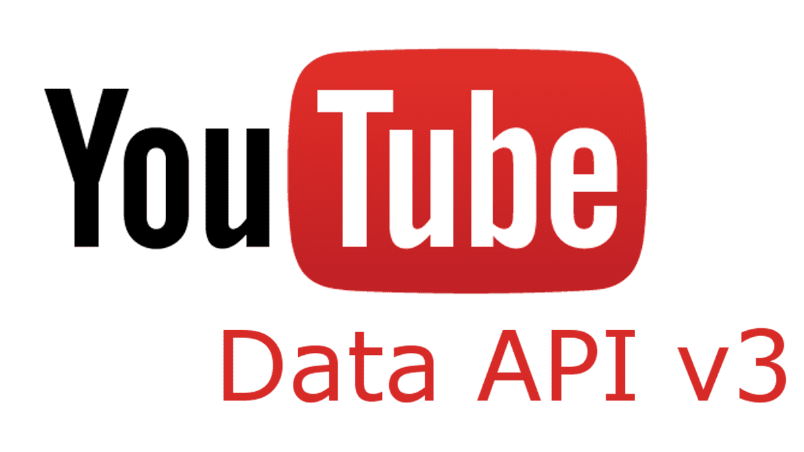
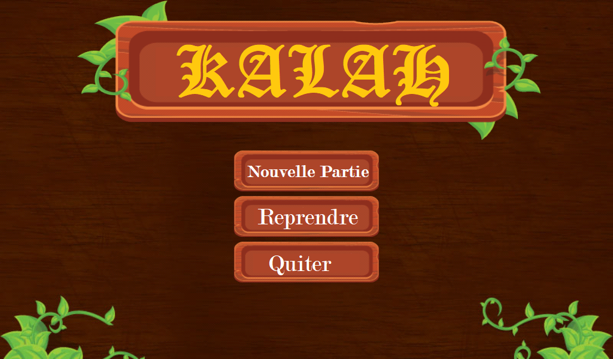

MY PERSONAL SKILLS
Languages and frameworks
- Java
- C
- Javascript
- Python
- HTML/css
- SQL
Softwares and platforms
- Android Studio
- Visual Studio
Skills
- Software architectures
- Scraping
- DATA extraction
- Automation
- chrome extensions development
MY WORKS
I was part of some collaborations, and i worked alone on various different projects.
Here's a list of my favorites!
Debump
This project was created for sellers that uses depop.com platform to sell their products. the project was a chrome extension made for one of my Client in Upwork. the extension has a payement implementation for monthly subscriptions with a free trail new users.
Top Youtube commentor

Learn More
This is a project created as a first data extractor for large amounts of data. This project aim to extract all comments for specific youtube channel with all metadata for each comment. This project uses Youtube API 3 to retrive data from youtube using axios libaray then save all the data for a specific youtube channel in sqlite database then analyse this data to retrive full information about the every commmentor including number of comments, likes , disliks and replies then sort all result by one of this cretiria
Kalah

Learn
More
An app coded during S1 in ensias. Basically, it's a simple game developed using C and SDL2 libaray.The code is available on Github's binome.
Folginar Development Project

A project started with a friend of mine. It's a set of skins for PowerAmp (one of the most used music players for Android) and they're currently the most famous skins for PowerAmp v3, with around 5k paid downloads. Other skins are under development and the download count is going up!
Fun facts!
- I keep practicing CP to keep my coding skills polished.
- I'am fun to japanise manga and anime
- I have watched all big anime series and still watching some of them.
- I used to do dropshipping, this experience helped me to get one of my first freelance
SOME NUMBER, AND MY GOAL
All i want is to use my natural attitudes to improve a little piece of world. Work and ambitions are important, but only if you can share your progresses with someone you love.
- +10 Costumized Chrome extensions developed
- 3 Paid Chrome extensions
- Years of experience
- 13 Github repositories
- +60 Website scraped